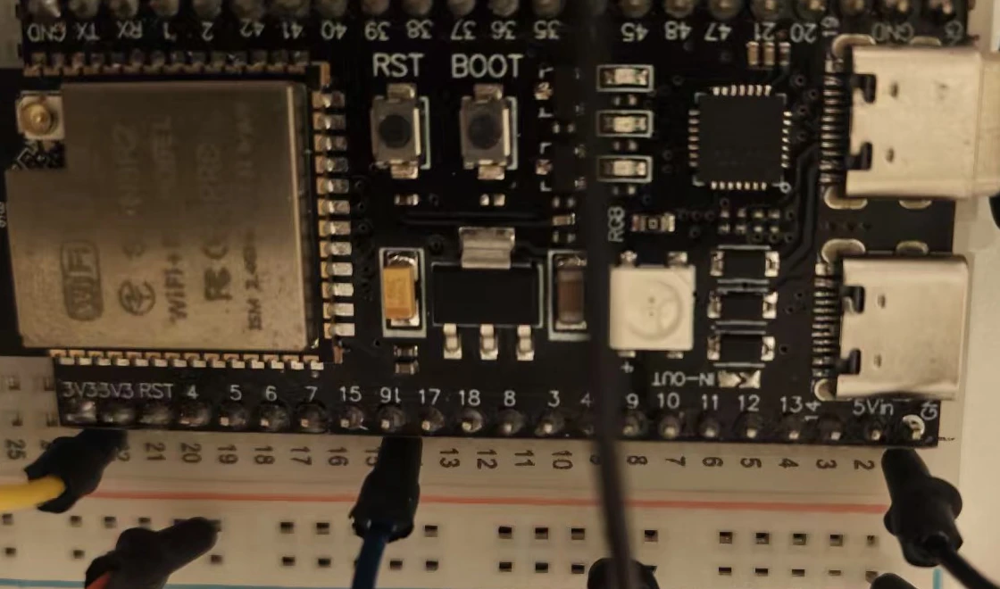
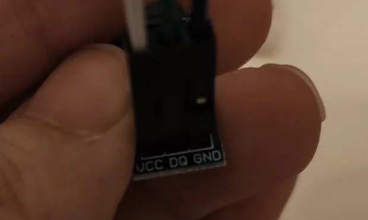
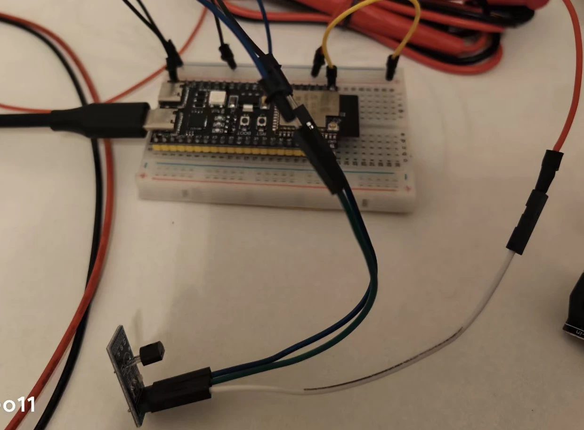

本机实时测温
USB 串口
你好，我是欧鲸鲸。把温度探头接上，我就能感受房间的冷暖，把它带进每一次聊天。

USB 串口
20–25 °C
浏览器刷写
当前无法在页面内播放，可以用上方链接打开视频。
跟着示例读数 24 °C，看探头测到的温度如何影响一句回复。点下面的章节可跳着看。
选一个表情，或者拖动滑块，看看欧鲸鲸的语气怎么变。
滑块只改变演示值，真实温度由安装后的本机面板采集。
切换一次温度，曲线就会出现。
DS18B20 接到 ESP32-S3 的 GPIO16，读数经 USB 串口送到电脑。断开或过期时，面板会提示暂时无法获取。
DeepSeek Harness 每次组装模型请求时读取有效温度。日常聊天每轮有 17% 的机会顺带提起冷暖。直接询问时，聊天工具会即时查询。
在本机面板填写理想温度或范围，也可以告诉聊天里的欧鲸鲸。设置保存在本机，表情和回复共用这份偏好。
先在三维图里看走线，再用实拍图找到两端相同编号的针脚。接线时以你手上板子的丝印为准。
用鼠标或手指拖动画面旋转。键盘可聚焦画面后按方向键。
① VCC 接 3V3 · ② DQ 接 GPIO16 · ③ GND 接 G
跳线插在与对应针脚同一组相通的面包板孔里。若模块没有板载上拉，查看下方的 4.7 kΩ 上拉图。

15 和 17 中间的 16。G 是地，旁边的 5Vin 留空。
VCC / DQ / GND。有的模块会把 VCC 写成 VDD，把 DQ 写成 DATA。| DS18B20 模块 | ESP32-S3 开发板 |
|---|---|
| VCC / VDD | 3V33.3 V 供电 |
| DQ / DATA | GPIO16找板上标 16 的针脚 |
| GND | G / GND共地 |
裸探头或确认没有板载上拉的模块，在 DQ 和 3V3 之间跨接一颗 4.7 kΩ 电阻。已确认模块自带这颗上拉时，直接接上面三根线即可。
接完再上电。 VCC 和上拉电阻只接 3V3，别接 5V / 5Vin。检查三根线对应无误、3V3 和 GND 没有短接，再用一根能传数据的 USB 线连接电脑。开发板通过 USB 供电即可。

第一次使用选 Windows x64 新手包；已有 dsh 可直接安装标准插件。适配官方 DeepSeek Harness Web 0.2.2-rc.1，首次安装需联网，环境和依赖默认走国内 npmmirror。
查看安装包和发布说明解压 Windows 新手包，双击 Start.cmd。先复用已有兼容 Node、pnpm、dsh，仅缺少时从国内镜像补装。双击 Stop.cmd 停止；Uninstall.cmd 仅卸载项目下载组件，复用软件和个人数据保留。
首次接入时可为兼容板烧录公开固件，再连接 DS18B20，确认面板显示真实温度。
浏览器刷写固件 ↗ 按实拍图接线 ↓没有可选模型时，面板自动弹出三步向导：准备密钥 → 打开 dsh 配置 → 检查模型并试聊。密钥填在 dsh 原生「左下账号菜单 → 设置 → 模型」中，可稍后配置或随时重开。选择模型和默认工作区后，询问「现在真实温度是多少？请使用温度查询工具。」并核对面板。
Windows 新手指南 ↗无需 Windows 新手包或克隆源码。准备官方 dsh Web 0.2.2-rc.1、Node ≥24.9，并确认 pnpm 可运行。Windows x64 已实际验证安装与加载，其他 dsh 版本尚未验证。
dsh plugin --profile web add "C:\Downloads\dsh-temperature-emotion-box-0.4.2.tgz" --registry=https://registry.npmmirror.com
dsh plugin --profile web list --depth=0
dsh web列表应出现 dsh-temperature-emotion-box 0.4.2，dsh「插件」页应显示 Temperature Emotion Box 已启用。打开日志中的温度面板地址（默认 8787 端口，冲突时自动换端口），跟随聊天配置向导、连接设备并试问真实温度。
安装或检测到模型只代表配置已加载；需要有效 API Key、真实工具结果和 AI 回复才能完成对话验证。没有设备时不会生成假温度。
查看完整标准插件指南 ↗